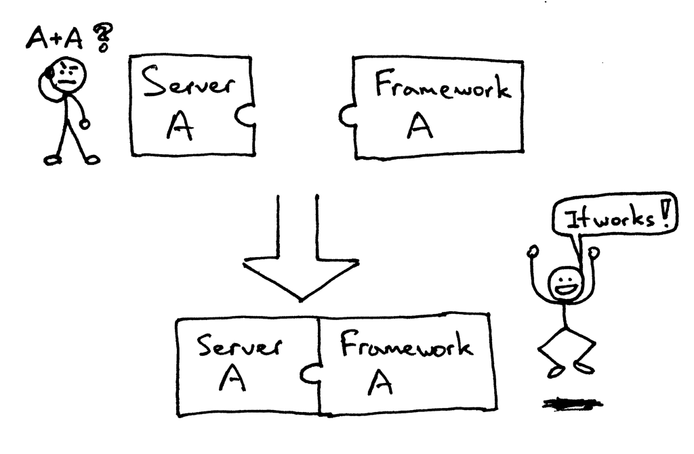

WSGI的作用
一般情况下，在我们编写一个web应用时，都会考虑使用各种Web应用框架。怎么在你刚建立的Web服务器上运行一个Django应用和Flask应用，如何不做任何改变而适应不同的web架构呢？
在以前，选择 Python web 架构会受制于可用的web服务器，反之亦然。如果架构和服务器可以协同工作，那就好了：

但有可能面对（或者曾有过）下面的问题，当要把一个服务器和一个架构结合起来时，却发现他们不是被设计成协同工作的:

那么，怎么可以不修改服务器和架构代码而确保可以在多个架构下运行web服务器呢？答案就是WSGI。

WSGI允许开发者将选择web框架和web服务器分开。可以混合匹配web服务器和web框架，选择一个适合的配对。比如,可以在Gunicorn 或者 Nginx或者 Waitress上运行 Django, Flask或 Pyramid等web应用。真正的混合匹配，得益于WSGI同时支持服务器和架构：

web服务器必须具备WSGI接口，所有的现代Python Web框架都已具备WSGI接口，它让你不对代码作修改就能使服务器和特点的web框架协同工作。
WSGI由web服务器支持，而web框架允许你选择适合自己的配对，但它同样对于服务器和框架开发者提供便利使他们可以专注于自己偏爱的领域和专长而不至于相互牵制。